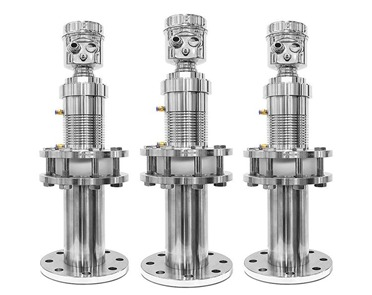
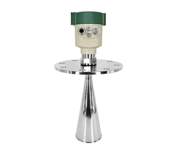

i.style.borderColor='#cbd5e1'); this.style.borderColor='var(--primary-cyan)';" style="width: 60px; height: 60px; object-fit: contain; background: #ffffff; padding: 3px; border-radius: 8px; cursor: pointer; transition: all 0.2s ease; border: 2px solid #cbd5e1;">
i.style.borderColor='#cbd5e1'); this.style.borderColor='var(--primary-cyan)';" style="width: 60px; height: 60px; object-fit: contain; background: #ffffff; padding: 3px; border-radius: 8px; cursor: pointer; transition: all 0.2s ease; border: 2px solid #cbd5e1;">
Made in India
100% Tested & Calibrated
Model: FMLT-1800LS
80GHz FMCW Radar Level Transmitter (Solids & Liquids)
The FMLT-1800LS is an advanced 76GHz–81GHz Frequency Modulated Continuous Wave (FMCW) non-contact radar level transmitter. Featuring a 5GHz scanning bandwidth and an ultra-narrow 3° beam angle, it delivers millimeter-level accuracy (±1mm) across ranges up to 120 meters. It penetrates dense dust, vapor, foam, condensation, and extreme temperatures (+200°C), making it the premier continuous level measurement solution for storage silos, tall process vessels, and aggressive chemical tanks.
76-81GHz FMCW Radar
Ultra-Narrow 3° Beam Angle
±1mm High Precision Accuracy
Up to 120m Measuring Range
4-20mA HART & RS485 Modbus